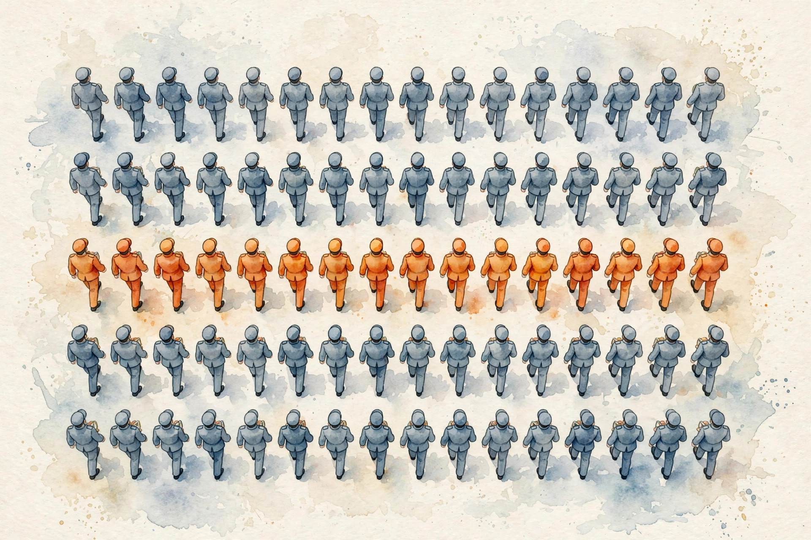
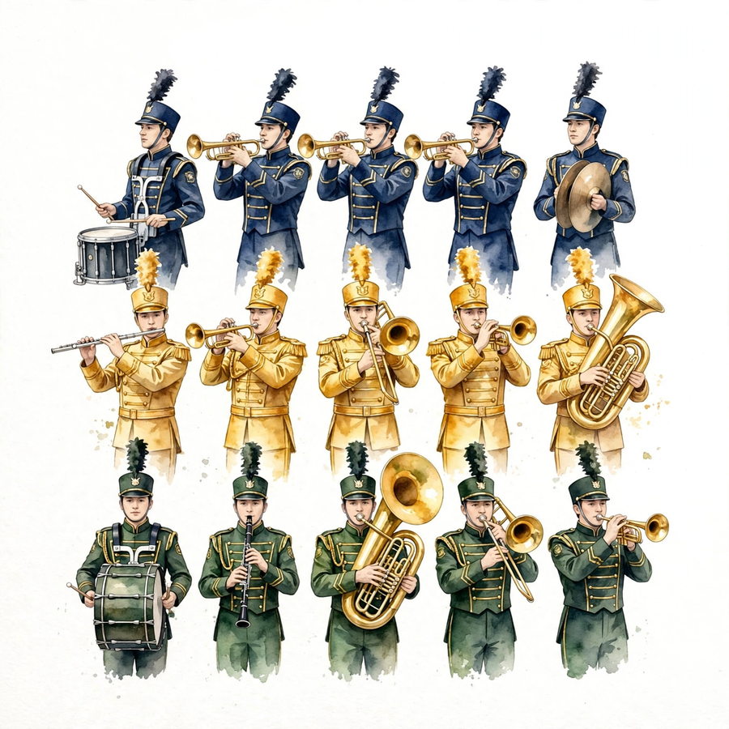
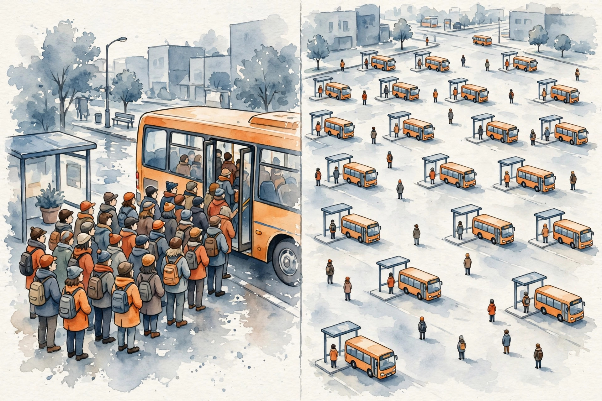
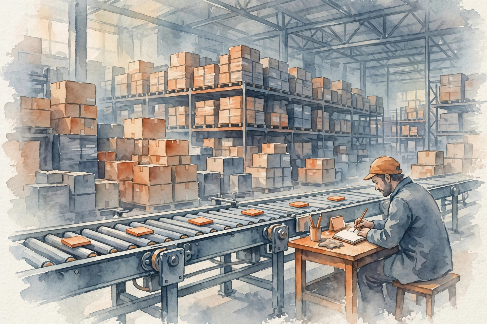

Unit 04 companion · narrated from the lesson document
Twelve concepts, one arc: the GPU execution model from warps to occupancy, then the IO-aware redesign that makes attention exact without ever writing the score matrix.
From the lesson The idea, and every number beside it, comes from the cited section of lesson-04-cuda-efficient-attention.md. The phrasing is the companion’s.
Illustration Invented by the companion: an analogy, a toy with made-up values, or a what-if. Never lecture content.
companion Companion voice: the idea above the tag is from the lesson. The generalization below it is the companion’s.
Provenance: no lecture transcript exists for this session. Calendar session titles anchor the lesson to Week 3, Oct 07 (Hardware Aware Algorithm Design, presented by Simran) and Oct 11 (Efficient Attention). This page narrates the lesson document, not a video. Claim class for every lesson leaf: PLANNED / SOURCE ATTRIBUTION PENDING. FlashAttention is taught from Dao et al. (2022, 2023), not as lecture content. Two internal inconsistencies found during the build are disclosed on-page with recomputation (C02 transfer times, C07 real-scale T).


From the lessonC01 §2, §3
Why do 32 threads always move as one, and why 32? Picture a marching band. A warp is a single row of 32 marchers stepping in lockstep. A block is the full section performing on one field, one SM. The grid is every section together. When one marcher steps out of line, the whole row dances both steps and waits.
From the lessonC01 §4, §6
For 1024 elements at 256 threads per block: 4 blocks holding 32 warps in total. Warp w inside block b owns elements (b*8 + w)*32 + lane. A branch that divides a warp executes both paths one after the other, roughly halving that warp’s throughput on those instructions. The lesson’s check: warp_of(700) = (21, 28), because 700 = 21*32 + 28.
From the lessonC01 §7, §9
The warp is the unit the scheduler sees. Estimate occupancy and divergence in warps, not threads. Inside a warp, threads are not independent. Shuffle and vote intrinsics depend on lockstep, so spreading those threads over several warps returns wrong answers. The checkable extension: microbenchmark a divergent branch against a uniform one at warp granularity and expect about 2x. (NVIDIA uses 32, other vendors use 64. The ideas transfer.)
Illustration Warp calculator. Enter a thread id. The widget applies the lesson’s warp_of().
Thread id:
From the lessonC02 §2, §3
32 threads read 32 floats. When does that cost one transaction, and when 32? Picture a bus stop. 32 riders share one bus when they queue at neighboring addresses. Riders scattered apart need 32 buses. The hardware only merges neighboring requests.
From the lessonC02 §4, §6
When thread i reads base + i, the 32 fp32 values fill exactly one 128-byte line: 1 transaction. At stride 32 the addresses fall on 32 different lines: 32 transactions, 128 bytes wanted against 4096 moved, a 32x waste. The toy: 1024 fp32 values cost 32 transactions coalesced and 1024 strided. The lesson’s check: transactions(1) = 1, transactions(32) = 32.
From the lessonC02 §7, §9
Coalescing hands a 32x lever to memory-bound kernels for the price of index math. When the access pattern cannot change, stage through shared memory: load strided, then read back coalesced. Contiguous data is not enough. The access itself must be contiguous. A warp reading random elements of a contiguous array still pays 32 transactions.
From the lessonC02 §6 Disclosed inconsistency. The lesson states that at 2 TB/s the coalesced read takes about 64 ns and the strided read about 2 us. Recomputation: 4096 bytes at 2 TB/s is 2.05 ns, and 131072 bytes is 65.5 ns. The lesson’s absolute times are about 32x too high, and the 32x ratio between the two stands. The transaction counts (32 vs 1024) are unaffected.

Illustration Transaction counter. Enter a stride. The widget applies the lesson’s transactions() for fp32 on 128-byte lines.
Stride:
From the lessonC03 §2, §3
A (1024, 1024) matmul overflows the chip. Where does reuse come from? Picture floor tiles. Nobody lifts the whole floor. You work one tile at a time, loading tiles of A and B into shared memory, multiplying, accumulating, then moving on. Each element loads O(n/tile) times instead of O(n).
From the lessonC03 §4, §6
Without tiling, each A element is read n times from HBM. Tiling along k with width Tk loads each A tile once per output tile row, cutting A reads by about Tk. The toy: (64, 64, 64) with tile 32 reads each A tile 64 times naive and 2 times tiled. At 1024 with tile 64 the HBM reads of A fall 16x. The lesson’s check: hbm_reads(64, 32) = 2, hbm_reads(1024, 64) = 16.
From the lessonC03 §7, §9
Tiling leaves the FLOP count untouched. It turns HBM reads into shared-memory reads, which lifts intensity. Larger tiles are not always better. Shared memory caps them. A 256x256 fp16 tile pair wants 256 KB, more than shared memory holds, so the launch fails. Size to the machine. Tile when the working set overflows on-chip memory and reuse exists, and skip tiling when everything fits in registers.
From the lessonC04 §2, §3
Thread 0 writes shared memory and thread 1 reads it. What guarantees the order? Picture a roll call. __syncthreads() is the teacher calling “everyone stop until all are here.” Every thread in the block must arrive before any thread passes. Skip the call and reads race writes.
From the lessonC04 §4, §6
Loading the tile: each thread places one element into shared memory. Barrier. Computing: each thread reads the whole tile. Without the barrier, a quick thread reads a tile element ahead of its loader’s write, giving wrong answers nondeterministically. A converged barrier costs about 10-20 cycles. What it buys is correctness, not speed. Missing barriers are bugs, and extra barriers are small stalls.
From the lessonC04 §7, §9
Barriers are not seasoning to sprinkle freely. A barrier inside divergent control flow deadlocks, because threads that never arrive wait forever. Arrange for only the first 16 threads to reach a __syncthreads() call and the kernel hangs. Take the block barrier for shared memory across warps and warp-level sync for warp-local exchange.
From the lessonC05 §2, §3
The GPU fits 64 warps per SM, yet your kernel runs 8. What ate the slots? Picture hotel rooms. An SM owns a fixed set of rooms: warp slots, registers, shared memory. Each block reserves rooms, and occupancy is the fraction reserved. A block that reserves too much shared memory leaves rooms vacant.
From the lessonC05 §4, §6
Occupancy = active warps / max warps per SM, and blocks per SM = the minimum over the resources. The toy: 64 warps max per SM, 256 threads = 8 warps per block, 48 KB shared per block against 100 KB per SM. At most 2 blocks fit, so 16 warps run: occupancy 16/64 = 25%. Halving shared use to 24 KB admits 4 blocks, 32 warps: 50%. The lesson’s check: occupancy(256, 48, 32) = 0.25, occupancy(256, 24, 32) = 0.50.
From the lessonC05 §7, §9
Occupancy serves latency hiding. It is a means, not a goal, and past about 50% extra occupancy rarely helps. A kernel at 25% with strong instruction-level parallelism can beat one at 100% full of stalls. Raise occupancy for latency-bound kernels, and trade it for registers when compute-bound. Measure, do not worship.
Illustration Occupancy planner. Enter block threads, shared KB per block, and registers per thread. The widget applies the lesson’s occupancy().
Block threads:
Shared KB per block:
Registers per thread:
From the lessonC06 §2, §3
Add 1024 numbers with 256 threads. How? Picture a tournament bracket. Pairs sum and winners advance, 1024 down to 1 across 10 rounds. Every round halves the field until one number remains.
From the lessonC06 §4, §6
In round r, thread i adds a[2i] + a[2i+1] into the next level. The work halves each round: 2N total work, log N span. Barriers separate the rounds, with warp shuffles covering the last warp. The toy: sum(0..1023) = 523776 in 10 rounds. Rounds = ceil(log2(N)), padding odd lengths.
From the lessonC06 §7, §9
Work O(N), span O(log N), and the reduction is bandwidth-bound: the tree moves data more than it computes. Fewer rounds are not always faster, because unrolling past the sweet spot wastes shared memory and hurts occupancy. Two to four elements per thread is the sweet spot. 1 wastes the launch, 16 wastes registers.
From the lessonC07 §2, §3
The attention FLOP count looks fine, yet the kernel crawls. Where does the time go? Picture a library missing its desk. Standard attention writes the entire T x T score matrix out to HBM, the warehouse, reads it back for the softmax, writes it out again, then reads it for the values multiply: four warehouse trips per idea. The desk, SRAM, could stage a tile, yet the naive code never touches it.
From the lessonC07 §4, §6
Per layer per head, HBM moves about 4T² bytes in fp16: two bytes, doubled for read-plus-write, doubled again for two passes. FLOPs run 4T²n. Intensity is 4T²n / 4T² = n = 64 FLOP/byte, under the ridge of 150, so memory-bound. The toy at T = 4096, n = 64, one head: 134 MB of score traffic, 67 us per head at 2 TB/s. Bytes are the bottleneck, not math.
From the lessonC07 §7, §9
The wall is O(T²) HBM traffic, and FLOPs are a distraction here. When the profiler shows 90% DRAM bandwidth on the attention kernel, believe it. The fix is fewer trips, not fewer FLOPs.
From the lessonC07 §6 Disclosed inconsistency. The lesson’s “real” row reads: T = 8192, h = 32, scores 32 x 134 MB = 4.3 GB traffic per layer, 2.1 ms per layer at 2 TB/s. Recomputation: 4.3 GB and 2.1 ms are the T = 4096, h = 32 figures (attn_traffic(4096, 32) = 4294967296 bytes, which is 2.15 ms at 2e12). At T = 8192 the traffic quadruples to 17.2 GB and 8.6 ms. The toy row (134 MB, 67 us) is unaffected.
From the lessonC08 §2, §3
Two fixes exist: rewrite the math or redraw the memory plan. Which one? Picture two ways to shorten a commute. Move closer, which is approximation: sparse, low-rank, or kernel attention changes what you compute, the way moving changes where you live, the model’s math. Or take the express lane, which is exact IO: FlashAttention computes the same result with fewer trips and keeps your address.
From the lessonC08 §4, §6
With sparse window w, each query touches w keys: work 2Twd against 2T²d, a ratio of w/T. Low-rank at rank r costs O(Tr), and kernel methods cost O(T) through feature maps. All three approximate. FlashAttention keeps the same O(T²) FLOPs with O(T) HBM traffic, exactly. The FLOPs stand still while the bytes fall. The toy at T = 4096, w = 256 makes sparse work 1/16 of dense, and FlashAttention cuts traffic from 134 MB to about 2 MB per head, Q, K, V, O only.
From the lessonC08 §7, §9
Error tolerance decides, not speed alone. Stay with exact IO while the model must not change, and allow approximations once quality tests pass and extra speed is needed. Local windows sever the long-range dependencies a task needs. A copying task across 4K distance fails at w = 256 and passes under exact attention. Judge on the task, not just perplexity.
From the lessonC09 §2, §3
Softmax wants the row max, but the row streams in blocks. How do you dodge the second pass? Picture a running high score. Track the running max (m) and the running sum (l). When a new block lands, the new max takes max(old max, block max), and the old sum rescales by the max’s travel, add the block’s sum, and continue. One pass, exact answer.
From the lessonC09 §4, §6
For block x: m_b = max(x), l_b = sum(exp(x − m_b)). The merge is m’ = max(m, m_b) with l’ = l·exp(m − m’) + l_b·exp(m_b − m’), and the output accumulator rescales identically. The toy row [1, 2, 3, 100] in blocks of 2: block 1 gives m = 2, l = e^(−1) + e^0 = 1.368, and block 2 gives m_b = 100, l_b ≈ 1.0. Merged: m’ = 100, l’ = 1.368·e^(2−100) + 1.0 ≈ 1.0, so softmax ≈ [0, 0, 0, 1]. The lesson’s check: online matches the two-pass reference.
From the lessonC09 §7, §9
The row costs O(T) memory, only the (m, l) scalars, in one pass: the trick that keeps tiling exact. The classic bug drops the rescale. Forgetting exp(m − m’) gives l = 2.368 instead of 1.0 on the toy, and the probabilities no longer sum to 1. Test against the reference. Run the online version whenever rows are tiled or streamed, and two-pass only for tiny rows.
Illustration Online softmax lab. Enter two blocks as comma-separated numbers. The widget applies the lesson’s online_softmax().
Block 1:
Block 2:
From the lessonC10 §2, §3
How do tiling plus online softmax yield exact attention at O(T) HBM traffic? Picture an assembly line plus a notebook. The outer loop feeds K/V tiles one at a time, and the inner loop feeds Q tiles for each. A score block is computed on chip, and the running (m, l, o) notebook absorbs it through the online rule. The T x T matrix is never written down. Only the notebook survives.
From the lessonC10 §4, §6
Take the i-th query block and the j-th key block: S = Q_i K_jᵀ / sqrt(d), computed on chip. The block softmax folds into (m_i, l_i, o_i) through the online update, and after all j, o_i = attention(Q_i, K, V), exactly. HBM accesses drop from Theta(T²) for the score matrix to Theta(T²d²/M) for SRAM size M. At d = 64 with M near 1e5, d²/M ≈ 0.04: roughly a 25x traffic cut, with the O(T²) storage gone entirely. The toy at T = 4, Br = Bc = 2, d = 2 runs 4 block pairs, and the final output matches naive attention to 1e-6.
From the lessonC10 §7, §9
The FLOP count stands at O(T²d). Memory wins, not math. FlashAttention is not always faster, because at tiny T the tiling overhead outweighs the saving. At T = 16 the naive kernel launches once while the tiled version launches many small blocks. Measure the crossover, roughly T = 128 to 512 by hardware. Run FlashAttention at long T or wherever the score matrix threatens memory, and standard attention for tiny T in tests.

From the lessonC11 §2, §3
The backward pass needs the attention scores, which were never stored. Where do they come from? Picture a chef who discards the prep bowls and re-chops. Keeping every score costs O(T²) memory. Recomputing each score tile during backward costs extra FLOPs and holds memory at O(T). Memory is scarce, and FLOPs are cheap.
From the lessonC11 §4, §6
Forward keeps m, l at O(T) and no scores. Backward rebuilds each S tile from the Q, K blocks, then the dQ, dK, dV updates use the online statistics. The toy at T = 4: forward holds m (4 numbers) plus l (4 numbers), 8 numbers against 16 scores. Backward rebuilds the 4 block pairs. The lesson’s check: recomputed P matches stored P. Backward FLOPs run about 2.5x the forward attention FLOPs, one recompute pass plus the gradients.
From the lessonC11 §7, §9
FLOPs for memory: the trade is explicit. Recompute is not free. It adds a full extra pass. At small T, where the scores fit easily, recomputing wastes FLOPs for zero memory gain. Gate the choice on T: recompute when T² storage overflows memory, and store for small T where FLOPs matter more.
From the lessonC12 §2, §3
The new kernel claims “2x faster.” What had the old kernel done wrong? Picture a race with rules. Both runners share the track (shapes, dtype), the shoes (hardware), a warm-up lap, warmup runs included, and a photo finish with synchronized timing. Beating a walking opponent sets no record.
From the lessonC12 §4, §6
The rules: identical shapes, dtype, and hardware. Warmup. Synchronize the device before and after. Report median-of-N. Use the baseline’s best config. Unsynchronized timing measures the launch, not the work. Median of 100 beats mean of 3. The toy: kernel A at 50 us median-of-100 synced against kernel B at 45 us, a 1.11x claim. Without sync, A reads 5 us of launch alone: a fake 9x.
From the lessonC12 §7, §9
Benchmarking costs minutes, and false wins cost weeks, so spend the minutes. One run never suffices: clocks vary, throttling bites, and first runs include compile time. The baseline has to be the strongest known, because naive versus FlashAttention as the baseline flips verdicts. Estimate for direction. Benchmark for the claim.
Illustration Claim checker. Enter two median times in microseconds. The widget reports the speedup and flags the no-sync trap.
Kernel A (us):
Kernel B (us):
From the lessonC01 to C12
The arc, end to end. The machine: warps of 32 in lockstep (C01), one transaction for adjacent access and 32 for strided (C02), tiles that convert HBM reads into shared-memory reads (C03), barriers that order the chaos (C04), occupancy as a means past its knee (C05), reductions as data movement (C06). The wall: naive attention pays four HBM trips per idea at intensity 64, memory-bound (C07). The two doors: change the math approximately or change the memory plan exactly (C08). The trick: the online softmax merge with its rescale (C09) lets tiled attention stay exact while the score matrix is never written (C10). The backward pass re-chops instead of storing (C11). And the discipline: control the race before claiming the win (C12).
From the lessonUnit chapter plate
The unit chapter plate states the fix in one line: “Never materialize the T x T matrix.” The role bridge: the research engineer carries the online softmax derivation and the tile trace as debugging tools for any attention kernel. The LLM engineer lets the T* crossover choose the serving kernel per context length. The research scientist frames the error-budget decision on the approximation table. Two disclosures stand on this page: the C02 transfer times and the C07 real-scale T, both recomputed above.
Every lesson on this page, in order. Tap one to return to its chapter.